Barracuda PoseNet Tutorial Pt. 4 (Outdated)
Version 2: Part 1
Last Updated: Nov 30, 2020
Previous: Part 3
Introduction
The post processing phase consists of a few main steps. We need to first determine the region of the image that the model estimates is most likely to contain a given key point. We’ll then refine this estimate using the output from the offsetsLayer. Lastly, we’ll account for any changes in aspect ratio and scale the key point locations up to the source resolution.
So far, major operations have been performed on the GPU. We’ll be performing the post processing steps on the CPU. Tensor elements need to be accessed on the main thread. Just reading the values from the model’s output layers forces the rest of the program to wait until the operation completes. Even if we perform the post processing on the GPU, we would still need to access the result on the CPU. I’m working on a way to avoid reading the values on the CPU. Unfortunately, it’s still too messy to include in this tutorial.
Create ProcessOutput() Method
The post processing steps will be handled in a new method called ProcessOutput(). The method will take in the output Tensors from the predictionLayer and the offsetsLayer.
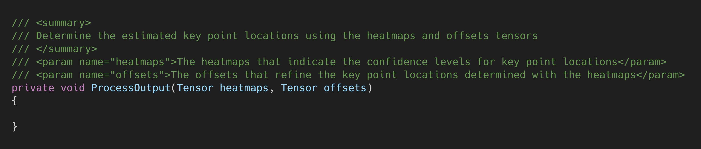
Before filling out the function, we need to create a new constant and a new variable.
Create numKeypoints Constant
The PoseNet model estimates the 2D locations of 17 key points on a human body.
| Index | Name |
|---|---|
| 0 | Nose |
| 1 | Left Eye |
| 2 | Right Eye |
| 3 | Left Ear |
| 4 | Right Ear |
| 5 | Left Shoulder |
| 6 | Right Shoulder |
| 7 | Left Elbow |
| 8 | Right Elbow |
| 9 | Left Wrist |
| 10 | Right Wrist |
| 11 | Left Hip |
| 12 | Right Hip |
| 13 | Left Knee |
| 14 | Right Knee |
| 15 | Left Ankle |
| 16 | Right Ankle |
Since the number of key points never changes, we’ll store it in an int constant. Name the constant numKeypoints and set the value to 17.
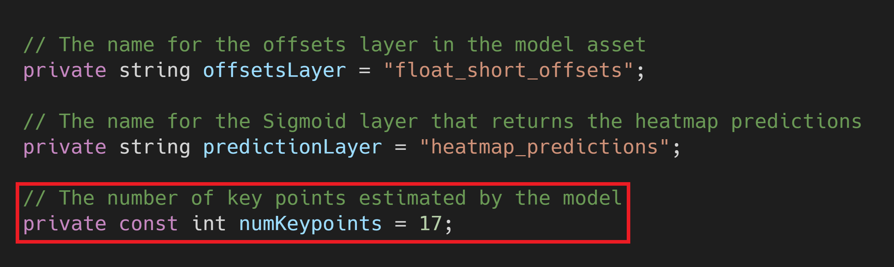
Create keypointLocations Variable
The processed output from the model will be stored in a new variable called keypointLocations. This variable will contain the (x,y) coordinates for each key point. For this tutorial, the coordinates will be scaled to the original resolution of 1920x1080 for videoTexture.
This variable will also store the confidence values associated with the coordinates. The model predicts key point locations even when there isn’t a human in the input image. In such situations, the confidence values will likely be quite low. We can decide how to handle the latest coordinates based on a confidence threshold that we pick.
There are many ways we can store this information. For simplicity, we’ll stick with an array of arrays. The array will have 17 elements. Each element will contain the location information for the key point that matches their index.
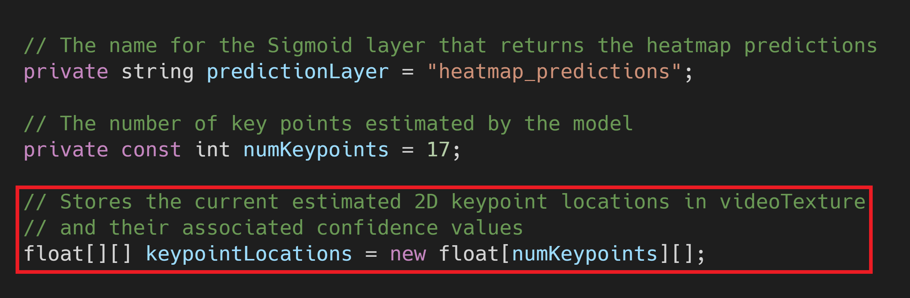
Retrieve Output Tenors
Call ProcessOutput() after engine.Execute(input) in the Update() method. We’ll use the engine.PeekOutput() method to get a reference to the output Tensors from the model. Since they are just references, we don’t need to manually dispose of them.
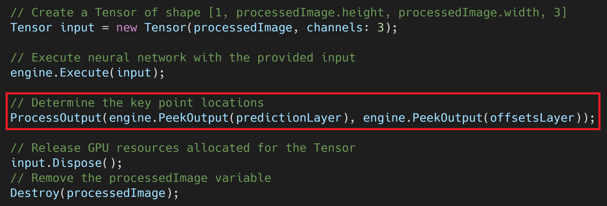
Now we can start filling out the ProcessOutput() method.
Calculate Scaling Values
The heatmaps generated by the model are much smaller than the input image fed into it. We’ll need to make some calculations to accurately scale the key point locations back up to the source resolution.
Calculate Model Stride
The heatmap dimensions are dependent on both the size of the input image and a fixed integer value called the stride. The stride determines how much smaller the heatmaps will be than the input image. The model used in this tutorial has a stride of 32. The heatmap dimensions are equal to the ceiling of resolution/stride. With our default input resolution of 360 x 360, the size of the heatmaps are 12 x 12.
Since we know the stride for this model, we could make it a constant value. However, calculating it is an easy way to make sure. This also makes it less of a hassle when switching between models with different stride values.
Model with a Different Stride Value
- ResNet50 Stride 16: (download)
To get the stride value, we’ll select a dimension of inputImage and subtract 1. We then divide that value by the same dimension of the heatmap with 1 subtracted as well. If we don’t subtract 1, we’ll undershoot the stride value.
For most input resolutions this will yield a value that is slightly above the actual stride. If we left it there, the key point locations would be offset from the videoTexture. To compensate, we’ll subtract the remainder of the calculated stride divided by 8. The stride for the PoseNet models provided in this tutorial series are all multiples of 8.
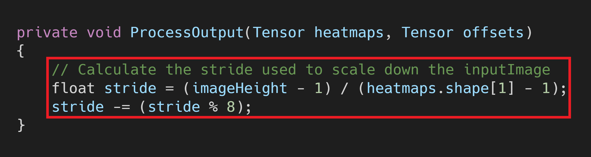
Calculate Image Scale
After scaling the output back to the inputImage resolution, we’ll need to scale the output up to the source resolution. We can use the dimensions of videoTexture to calculate this scale.
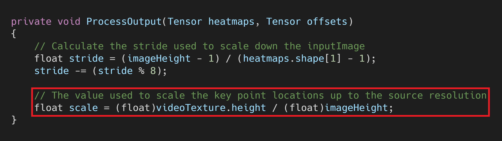
Calculate Aspect Ratio Scale
As I noted in Part 2, we need to compensate for the change in aspect ratio that results from resizing the image. We can use the dimensions of the videoTexture to stretch the output to the original aspect ratio.
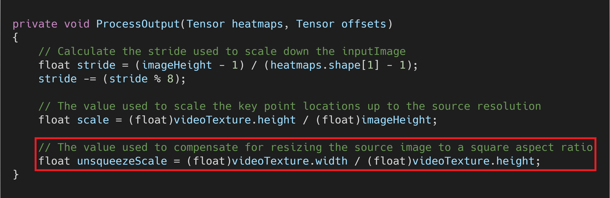
Iterate Through Heatmaps
Now we can iterate through each of the heatmaps and determine the location of the associated key points.
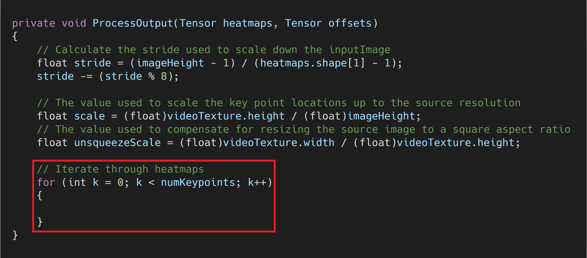
Locate Key Point Indices
For each heatmap, we’ll first need to locate the index with the highest confidence value. This indicates what region of the image the model thinks is most likely to contain that key point. We’ll create a separate method to handle this.
The new method will be called LocateKeyPointIndex() and take in the heatmaps and offsets tensors along with the current keypointIndex. It will return a Tuple containing the (x,y) coordinates from the heatmap index, the associated offset vector, and the confidence value at the heatmap index.
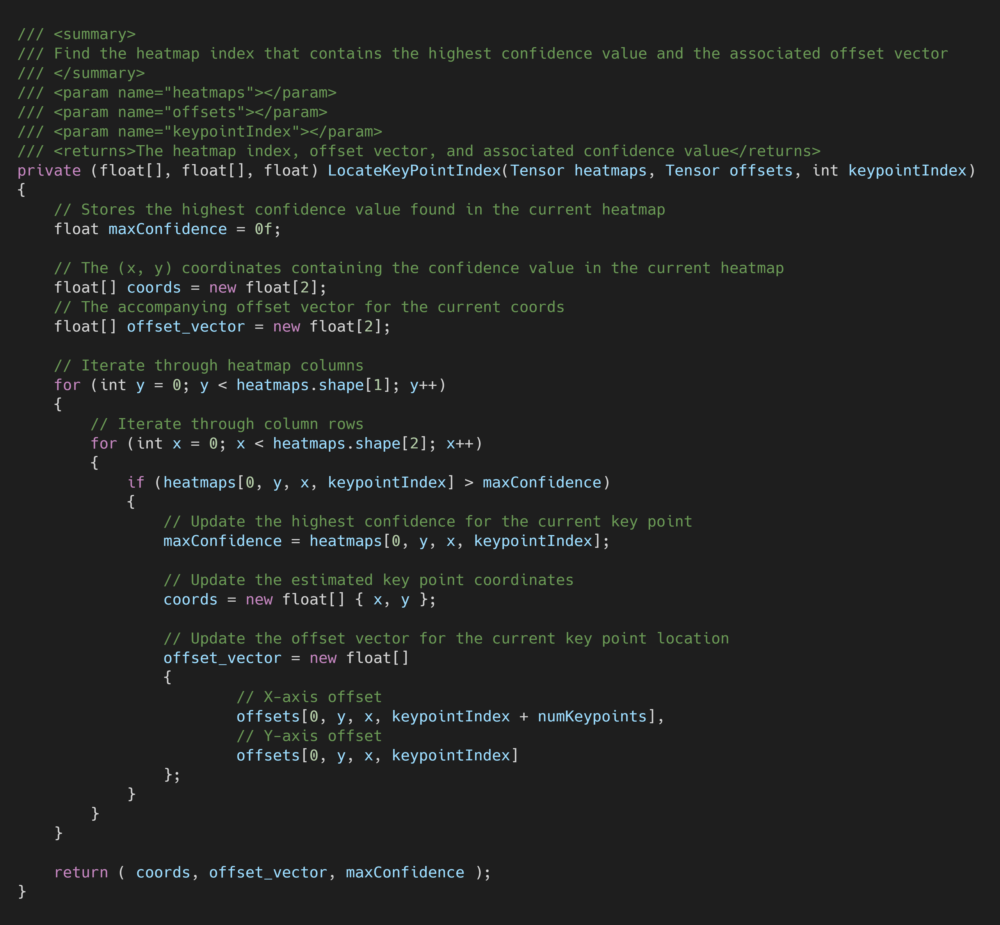
Call the Method
We’ll call LocateKeyPointIndex() at the start of each iteration through the for loop in ProcessOutput().
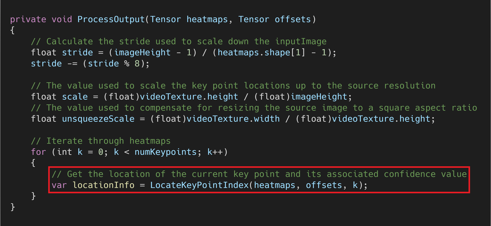
Calculate Key Point Positions
Now we can calculate the estimated key point locations relative to the source videoTexture. We’ll first extract the output from the Tuple returned by LocateKeyPointIndex(). The offset vectors are based on the inputImage resolution so we’ll scale the (x,y) coordinates by the stride before adding them. We’ll then scale the coordinates up to the source videoTexture.
Only the x-axis position is scaled by the unsqueezeValue. This is specific to our current videoTexture aspect ratio. I will cover a more dynamic approach in a later post.
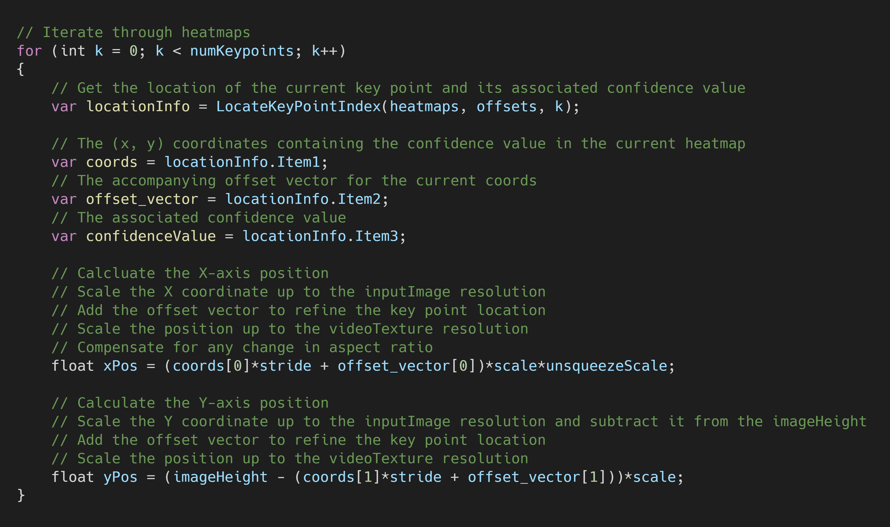
Store Key Point Positions
Finally, we’ll store the location data for the current key point at the corresponding index in the keypointLocations array.
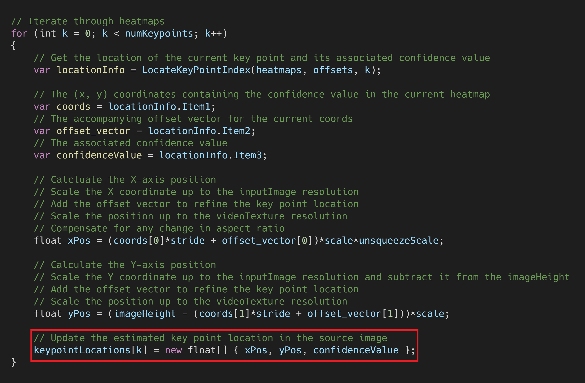
Summary
We finally have the estimated key point locations relative to the source video. However, we still don’t have an easy means to gauge the model’s accuracy. In the next post, we’ll map each key point location to a GameObject. This will provide a quick way to determine if the model is outputting nonsense as well as what scenarios the model struggles with.